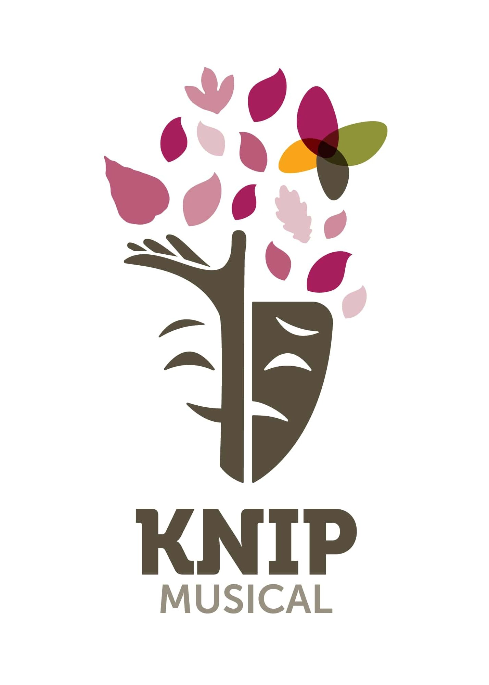
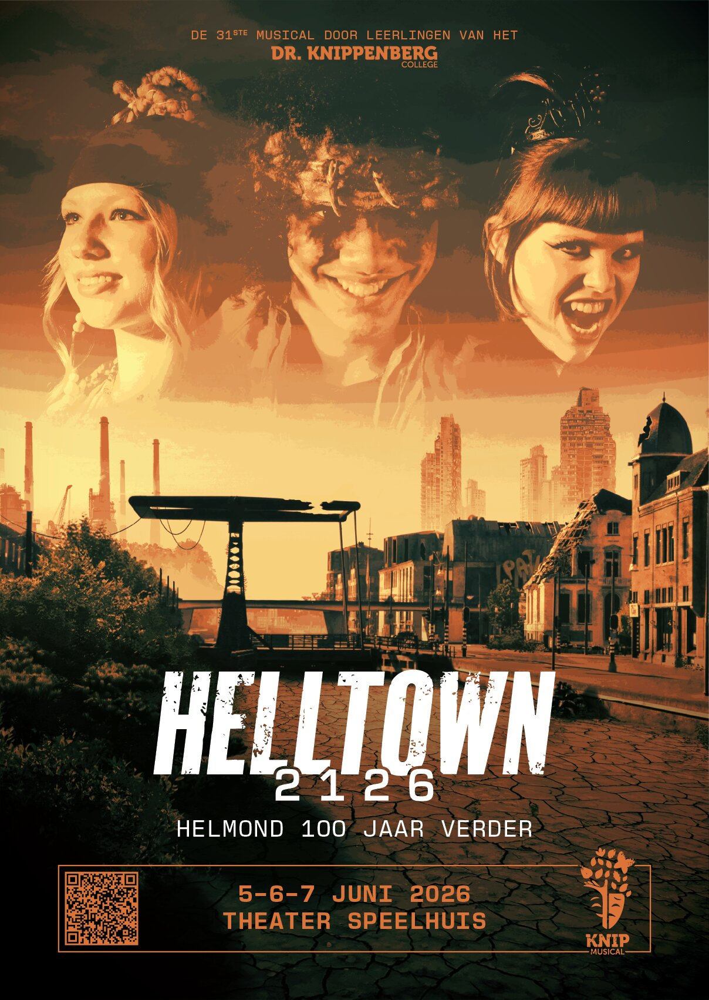
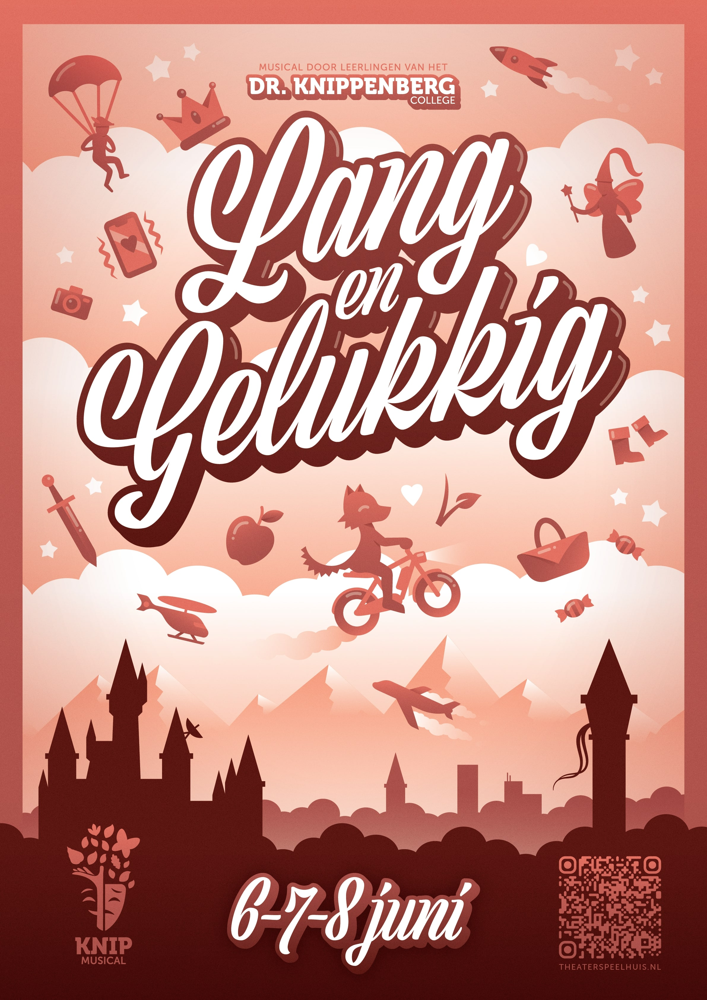
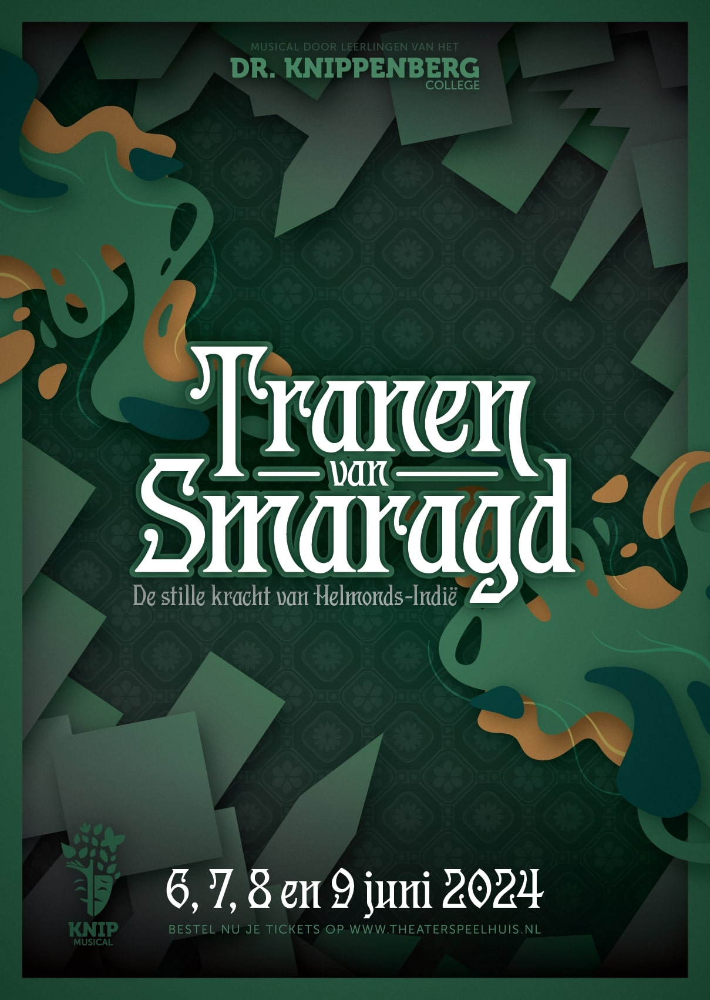
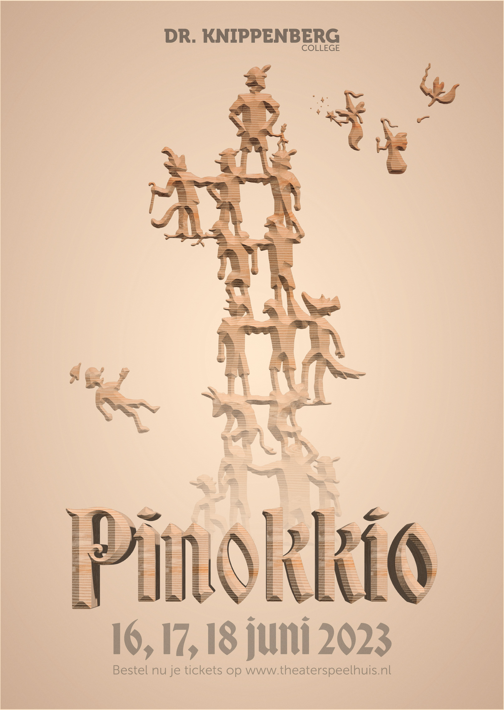
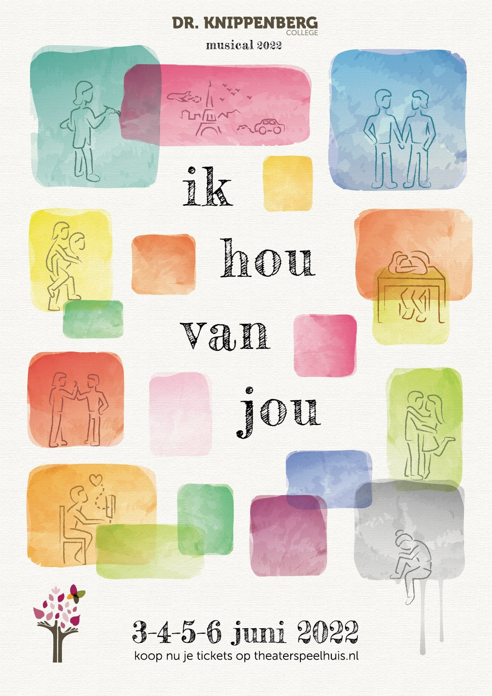
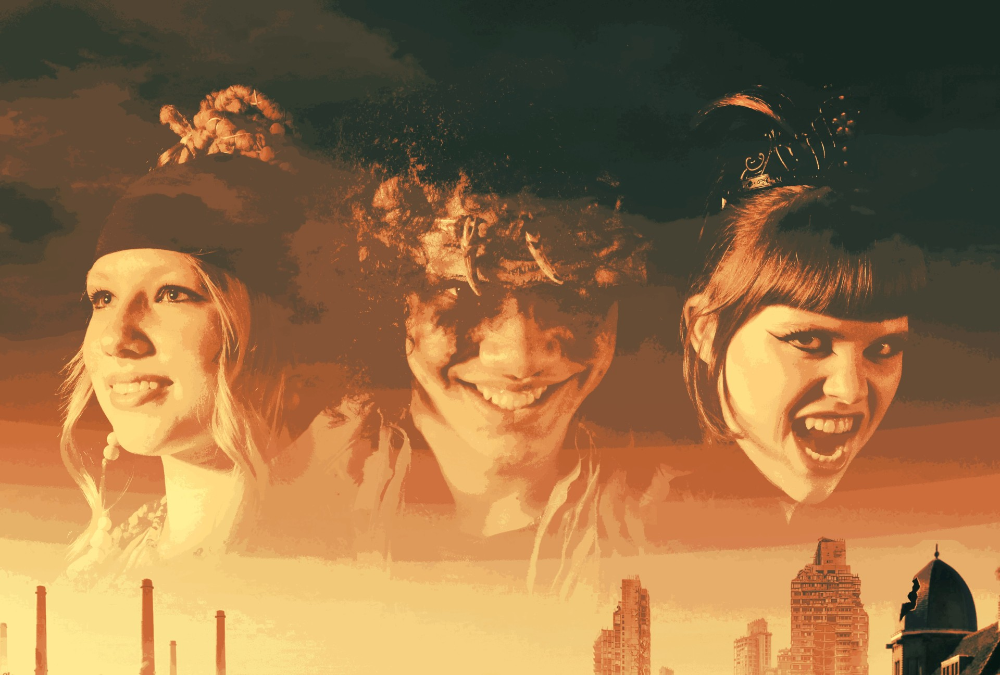
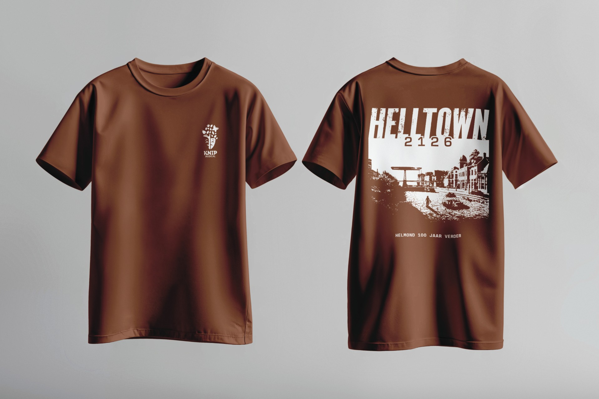

The high school I attended has its own musical group that performs every year in the biggest theatre in Helmond. The producer approached me in 2022 for the design of the poster for their musical 'Ik hou van jou'. I gladly accepted and have designed all their posters since.
All designs (2022 - 2026)






Tranen van Smaragd
In 2024 I continued my work for Knip Musical with the musical 'Tranen van Smaragd'. The
musical revolved around the Moluccan history in Helmond, which inspired my design. The design features buildings
and key landmarks of Helmond. These gray, jagged shapes differ greatly from the colourful, organic shapes in the
center. The central
shape, which looks like a river of green also represents the title, which means 'Tears of Emerald'. The
buildings, which almost look like sharp teeth, represent the oppressive feeling of the city and the culture the
Moluccans had to live in after leaving their home. The background features a pattern based on Indonesian
tapestries, and the typography is partially based on Indonesian writing as well.
In the end, I designed a poster, flyer, banner, and an advert
for a digital billboard next to a busy road in Helmond. My designs were also
featured on projections during the musical itself.
Helltown 2126
2026's musical 'Helltown 2126' is a dystopian piece, for which the
director wanted a more gritty and realistic style. I used Adobe
Photoshop to create a dystopian skyline of Helmond. Buildings have
collapsed, the channel has dried up and in the distance, remains of
tall skyscrapers and factories can be seen. The skyline shows how
humanity's greed has led to the destruction of the world, but also
how nature is slowly taking over again.
Inspired by
post-apocalyptic movie posters, I created a decaying logo for the
musical and used a gritty and textured style for the poster design.
To complete the poster, I photographed the actors in a studio and
edited them to fit the dystopian style of the poster. The result is
a poster that captures the dark and gritty atmosphere of a
post-apocalyptic Helmond, while also showcasing the characters that
inhabit this dystopian future.

